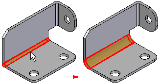

Bend Radius command
Use the Bend Radius command to modify the bend radius of one or more bends you select on a sheet metal part.

When working with sheet metal models imported from another application, you should first use the Convert to Sheet Metal command to convert the model to a sheet metal part.